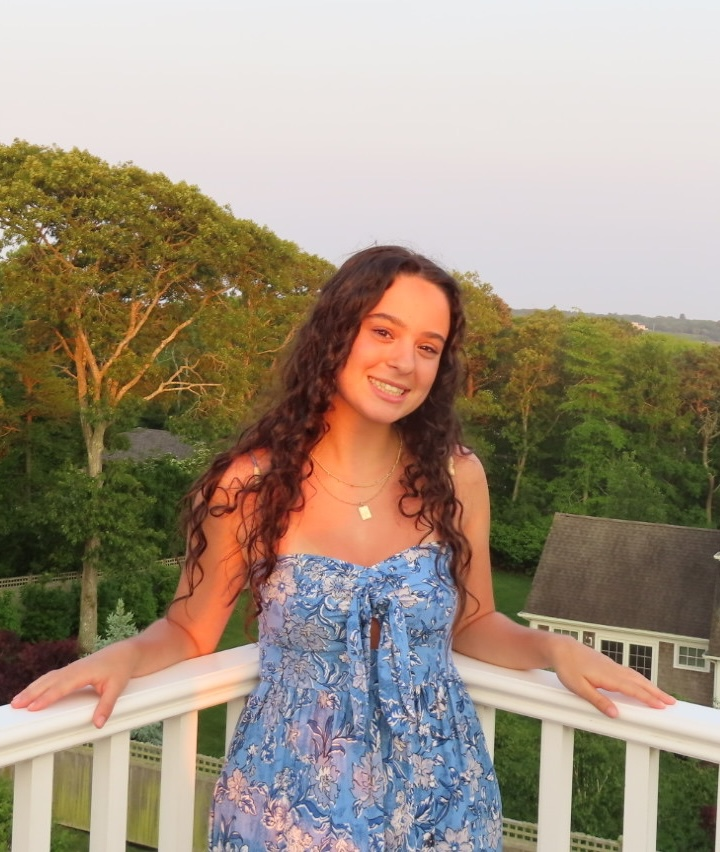

Work in progress — check back soon!
Research conducted under the mentorship of Nicole Meng, Tufts University.
Dual-degree student across Tel Aviv and New York, interested in the intersection of cognitive science and AI.
I'm an undergraduate studying psychology, cognitive science, and computer science in the Dual Degree Program with Tel Aviv University and Columbia University, with a focus on human-AI interaction and cognitive computing — specifically how AI systems internalize, replicate, and are vulnerable to the same psychological biases that shape human thinking.
Outside of that, I love seeing and trying new things; whether that's dancing, cooking, rowing (something I recently picked up), or finding new ways to think about the systems we build and the world we're leaving behind. I care deeply about sustainability, and that thread runs through both my work and the way I travel. I've been to over 20 countries, from Japan and South Korea to Georgia, El Salvador, and Australia, and I'm not done yet.
Most importantly, I like to make things: videos, meals, projects, and plans that fall apart and get remade over and over.
Currently studying at Tel Aviv University/Columbia University Dual Degree Program · Open to internships

TAMID Consulting Analyst
Tel Aviv University
Oct 2025 — Present
Bank Teller
Middlesex Savings Bank · Maynard
Dec 2022 — Oct 2025
Python Teaching Assistant
Concord-Carlisle High School
Sep 2023 — Jun 2024
Work in progress — check back soon!
Research conducted under the mentorship of Nicole Meng, Tufts University.
Currently Reading
Waiting for the Barbarians
J.M. Coetzee.
Fun Facts
I can solve a Rubik's cube in under a minute.
I keep a Christmas tree in my room year-round.
My next travel destination is Tanzania!
Interests
Places I've Been
25 countries · 5 continents
Other
A little bit about my gap year -
After high school, I ditched the traditional path and took a gap year to explore the world - and it completely changed me. In just one semester, I backpacked through 7 countries across Europe, hit 3 cities in Australia, and explored 3 cities in Thailand, collecting experiences (and lifelong friends) along the way. The second semester slowed things down in the best way: I lived in Japan, studying at a language school and immersing myself in a culture unlike anything I'd ever known.